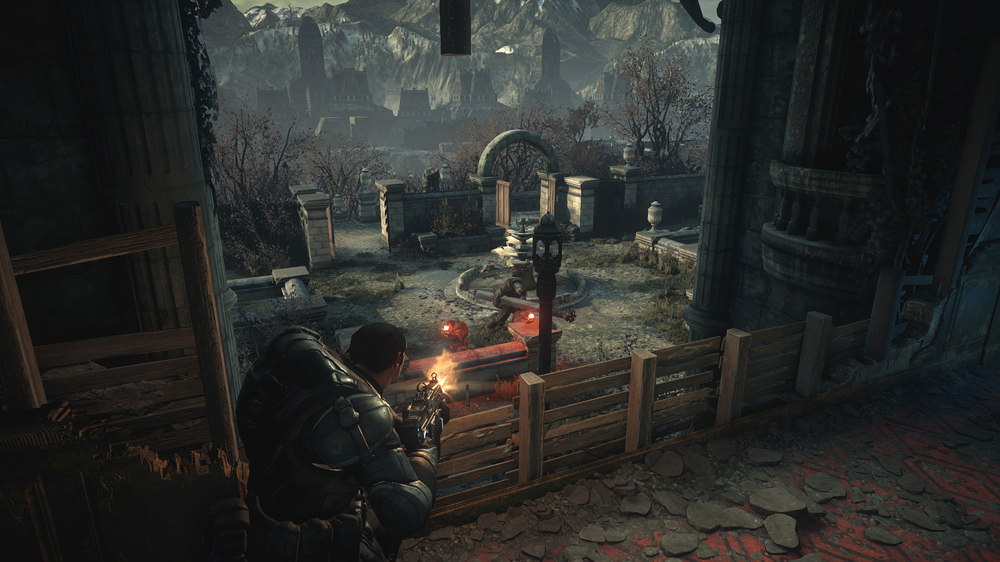
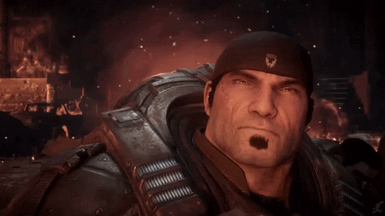
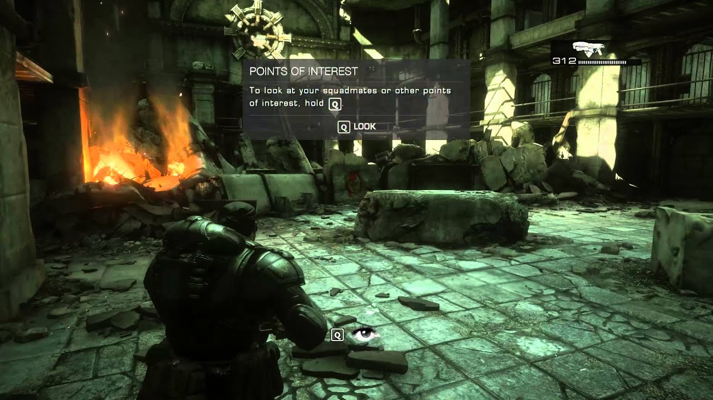
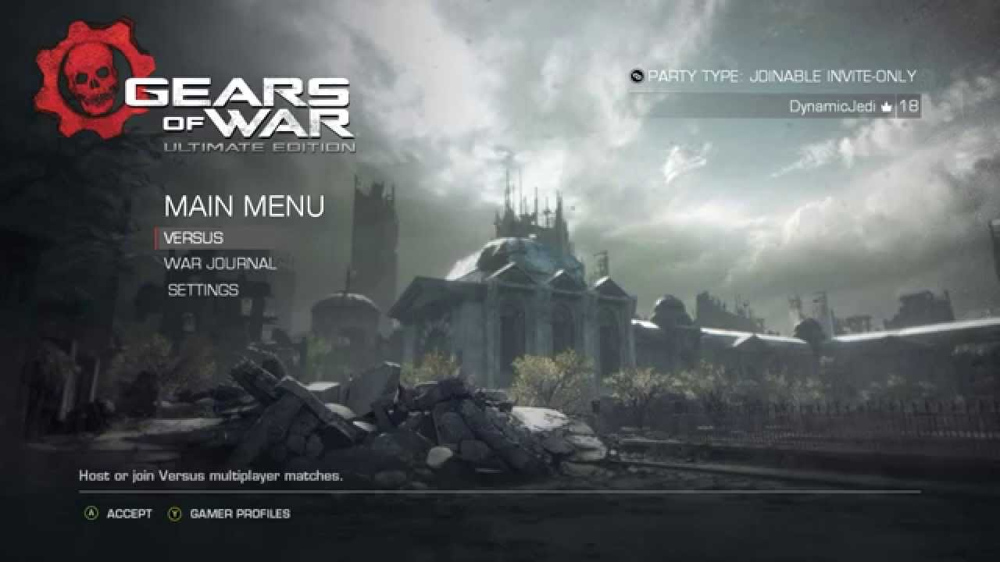

Gears of War Ultimate Edition
 |
 |
 |
 |
Desenvolvedora: The Coalition
Plataforma: Xbox One e PC (Retrocompatível com Xbox One e Series S/X)
Ano de Lançamento: 2015
Sinopse: Esta é a versão definitiva do clássico que iniciou tudo. Gears of War: Ultimate Edition reconstrói o jogo original do zero, trazendo gráficos em 1080p, 60fps no multiplayer e melhorias significativas na jogabilidade.
A história segue o sargento Marcus Fenix e o esquadrão Delta em sua missão suicida para detonar a Bomba de Massa Leve e destruir o coração da horda Locust. Além do conteúdo original, esta edição inclui cinco capítulos da campanha que antes eram exclusivos da versão de PC, oferecendo a experiência mais completa e visceral da primeira batalha pela sobrevivência da humanidade.